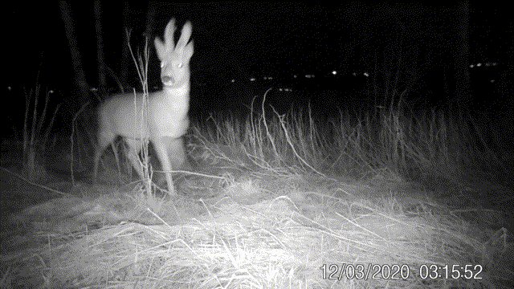
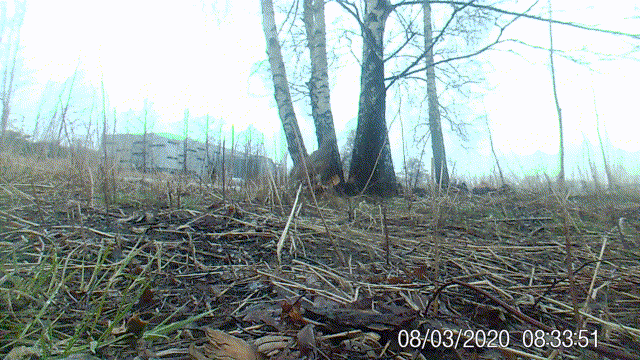

VI DYR ER OGSÅ HER!
Det finnes mange kule dyr rundt oss. Men dyr er sky, og gjemmer seg som oftest for oss mennesker. Ved hjelp av et viltkamera kan vi oppdage mer av dyrelivet rundt oss.

Et viltkamera er et kamera som er laget for å stå ute i naturen og ta bilde eller filme når noe beveger seg foran det. Det tar bilder både i lys og mørke. I området Råel og Kilen i Tønsberg, har flere dyr latt seg filme. Jeg legger ut de beste blinkskuddene her på johoo.no.

Det er gøy å se hvilke dyr som finnes i nabolaget! Bildet over er et nærbilde av snuta til en grevling, som kom og snuste på viltkameraet.

Viltkameraet fikk jeg til jul. Allerede første natten jeg satte det ut ved et grevlinghi, fikk jeg film av grevlingen - og en rev i tillegg!

Det er spennende å prøve å forestille seg hvor dyra vil gå forbi, og sette opp kameraet der.

Denne nettsiden er laget av Steven Stordal, som er glad i både dyr og kaffe :)